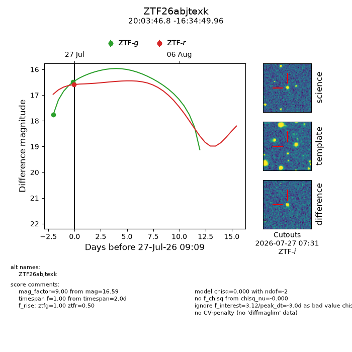
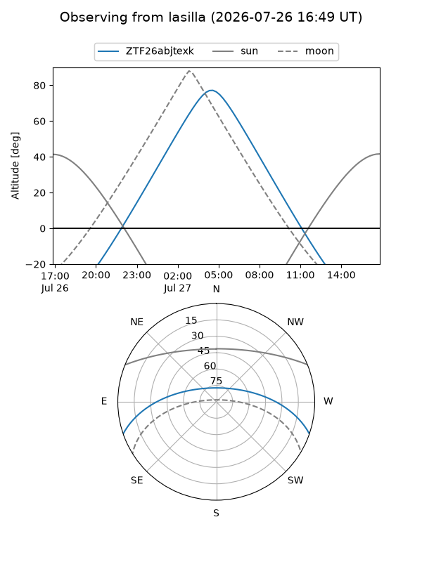
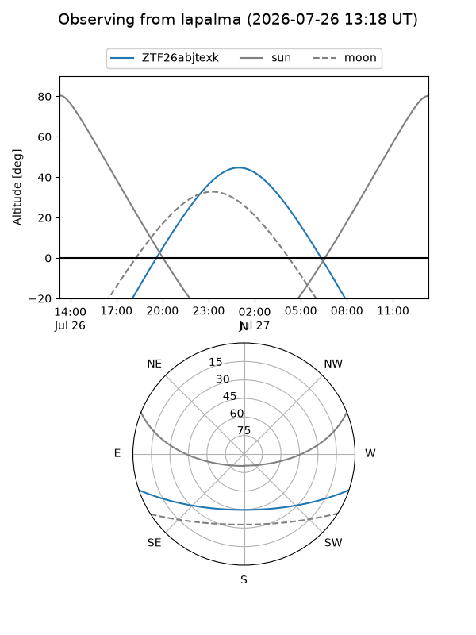
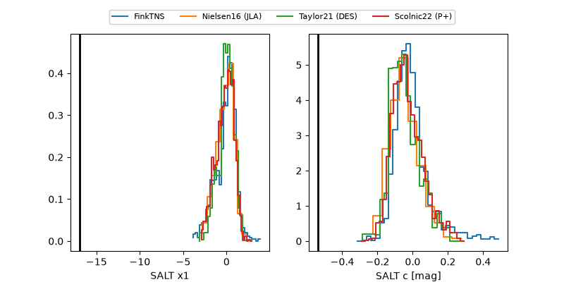

ZTF26abjtexk
Target ZTF26abjtexk at 2026-07-27 09:11
Aliases and brokers:
FINK-ZTF: ztf.fink-portal.org/ZTF26abjtexk
Lasair-ZTF: lasair-ztf.lsst.ac.uk/objects/ZTF26abjtexk
ALeRCE-ZTF: alerce.online/object/ZTF26abjtexk
Direct TNS query: direct search
alt names
ZTF26abjtexk (ztf,fink_ztf)
Coordinates:
equatorial (ra, dec) = 300.9450,-16.58054
equatorial (HMS+DMS) = 20:03:46.81,-16:34:49.96
galactic (l, b) = (25.5335,-23.26086)
Flags:
peak dt: -3.0
Photometry:
last ztfg=16.49, ztfr=16.59
2 ztfg, 1 ztfr detections
Lightcurve

Visibility


Additional plots
